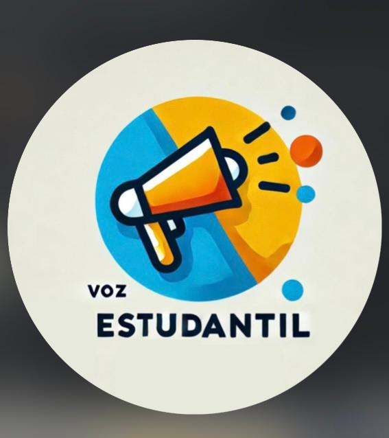
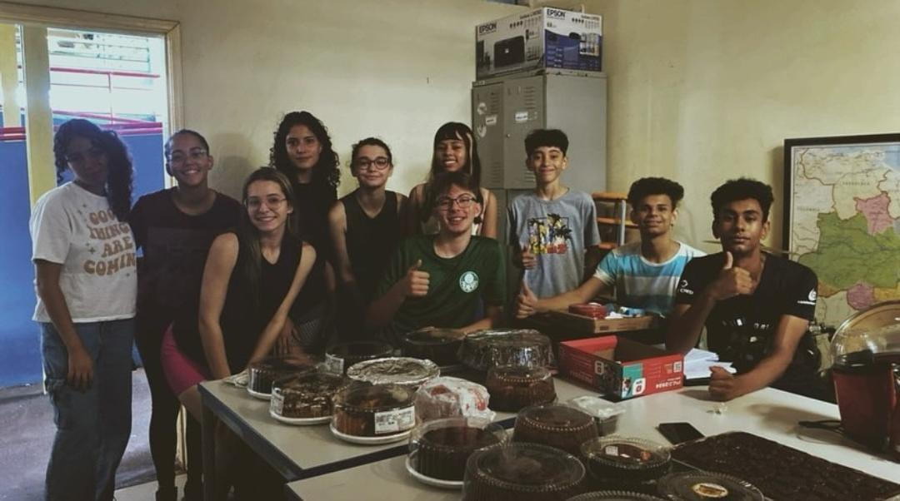

Grêmio Voz Estudantil 
Qual a função do Grêmio Estudantil
é a oportunidade do estudante ter voz ativa na administração da escola, apresentando ideias, sugestões e críticas. Contribui para a formação e enriquecimento educacional, representando os primeiros passos na vida social, cultural e política do estudante.
Ações positivas do Grêmio 2024
01. Aquisição de mesa de tênis de mesa, bolinhas, raquetes e cabo de rede de vôlei
02.Aquisição de tintas de canetas, cabos HDMI e concerto de impressoras
03. Aquisição de ração para o funcionamento da aquaponia e organização da sala do grêmio
04. Festa Junina e Agenda Semanal na TV do refeitório
05. Campeonato de tênis de mesa e pagamento de campeonato de xadrez
06. Concurso de dia das maẽs e reunião com nutricionistas da escola
07. Doação de 800,00 reais para a viagem de alunos de JEESP e Aquisição de 4 troféus para a premiação
08. Aquisição de 5 instrumentos musicais
09. Campanhas: Título Eeleitoral, Agasalho e Lions Club
10. Aquisição de espelhos paras os vestiários
11. Distribuição de água e lanche no Provão Paulista do terceiro ano
12. Campanha Setembro Amarelo
13. Entrega de picolés no dia das crianças
14. Homenagem aos professores
15. Arrecadação de 1000,00 reais para aquisição de itens de higiene feminina para a olimoíada de Química
16. Realização do Seminário para o SARESP
17. Realização da venda de salgados para a aquisição de dinheiro para a Olimpíada de Química
18.Compra de mudas de Lavanda, Camarão Amarelo e Vermelho, Lantana
para a contribuição da eletiva "BEE MOVIE"
19. Pequena contribuição financeira com a turma do terceiro ano do ensino médio
20. Pequenas vendas de Refrigerantes,Cachorros Quentes,Pipocas,Bolos e Salgados.
Participantes
Lorena da Silva (Líder)
João Santos (VIce-Líder)
Anna Lívia Pires (Líder de Finanças)
Maycon Nayt (Vice)
Maria Eduarda de Oliveira (Líder de Cultura)
Guilherme Carrascosa (Vice)
Eric Gomes (Líder Social)
Vitor Luquete (Vice)
Melissa Baraúna (Líder de Esportes)
Tulio LOurenço (Vice)
Monique Silva (Líder de Eventos)
Ruan (Vice)
Elisa Frazão (Líder de Comunicação)
Ana Lays Floriano (Vice)
Diego Cruz (Suplente)
Lucas Manoel (Suplente)
Ana Julia Crepaldi (Suplente)
Para sugestões enviar um direct via Instagram no @peivozesestudantl
